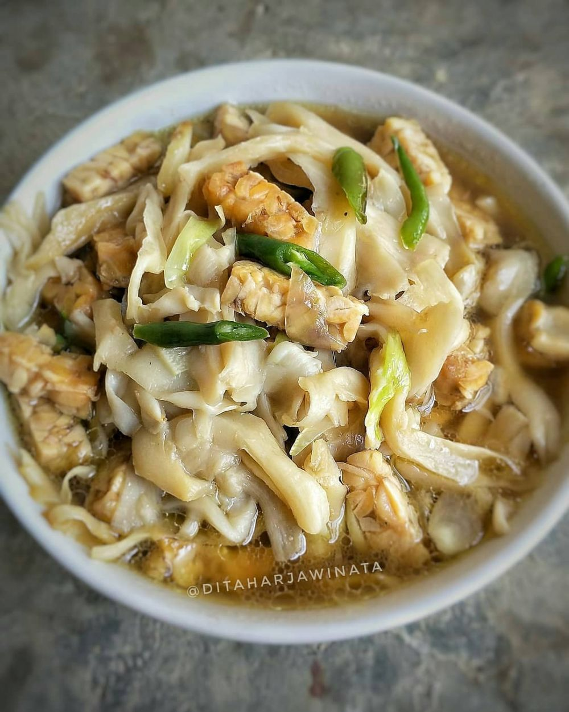

Tumis Jamur Tiram
Tumis Jamur Tiram
- Bahan-bahan:
- 2 bungkus jamur tiram
- 1/2 papan tempe
- 4 siung bawang merah
- 3 siung bawang putih
- 5 buah cabai hijau
- saus tiram
- kaldu jamur
- garam dan gula
- Cara membuat:
- Cuci bersih jamur, siangi, sisihkan.
- Goreng tempe setengah kering.Sisihkan.
- Tumis dua bawang dan cabai sampai harum, masukkan jamur, aduk rata, tambahkan saus tiram, kaldu jamur, gula dan garam.Aduk rata.
- Masukkan tempe, beri sedikit air, masak sampai bumbu meresap.Angkat dan sajikan.